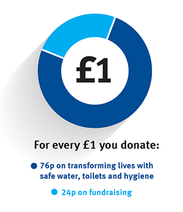

Hello Glastonbury!
We’re going to the world’s greatest music festival armed with glitter, clean water and loo brushes
Come and find us at Worthy Farm >We’re going to the world’s greatest music festival armed with glitter, clean water and loo brushes
Come and find us at Worthy Farm >We’re going to the world’s greatest music festival armed with glitter, clean water and loo brushes
Come and find us at Worthy Farm >3 in 10 schools worldwide don't have clean water. Let's change that.
Come and find us at Worthy Farm >Run, climb, crawl and splash your way through WaterAid’s unique 10k toilet-themed obstacle race.
Come and find us at Worthy Farm >When your support helps a community dig a well or install a tapstand, it's no exaggeration to say it's the start of something life-changing.
Enjoy the unique atmosphere and run across the iconic Tyne Bridge for WaterAid in the world's biggest and best half marathon.
Mani Karmacharya, our Voices from the Field Officer in Nepal, travels to a remote community to celebrate the arrival of clean water.
